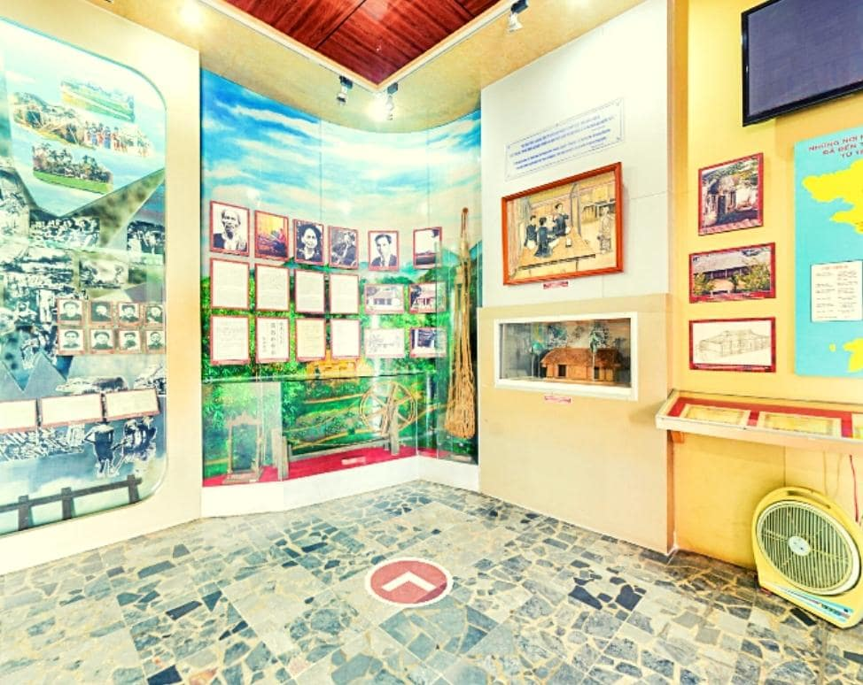
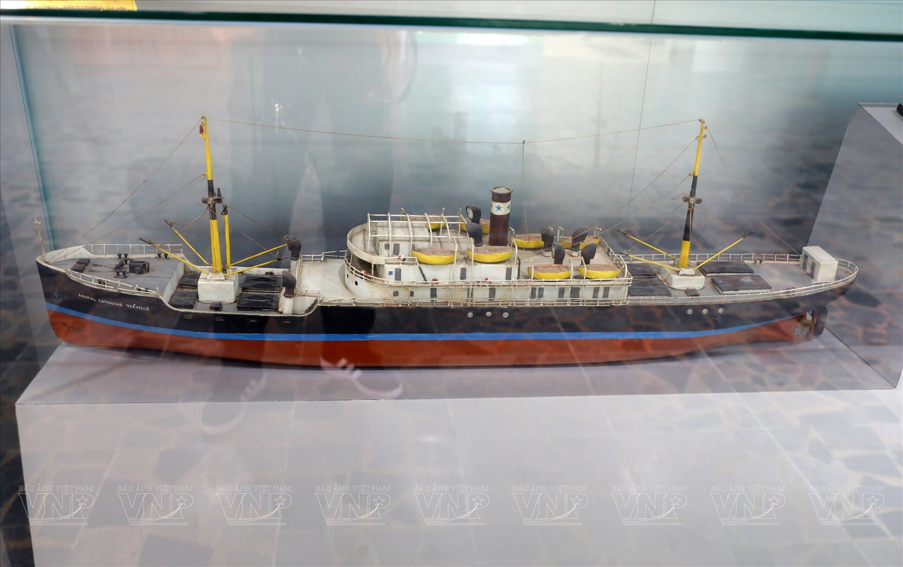
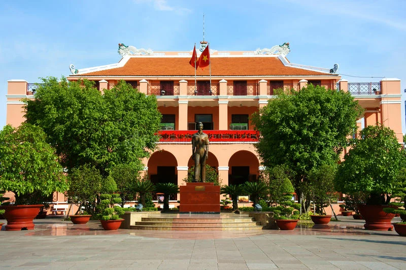

1. Không gian khởi nguồn và bến cảng năm 1911
Tái hiện bối cảnh đất nước cuối thế kỷ XIX đầu thế kỷ XX, quê hương Nghệ An và quyết định đến bến cảng Sài Gòn của người thanh niên Nguyễn Tất Thành vào tháng 6/1911.

Tái hiện bối cảnh đất nước cuối thế kỷ XIX đầu thế kỷ XX, quê hương Nghệ An và quyết định đến bến cảng Sài Gòn của người thanh niên Nguyễn Tất Thành vào tháng 6/1911.

Hiện vật trung tâm thu hút đông đảo học sinh, sinh viên: mô hình con tàu buôn Pháp nơi người thanh niên Văn Ba làm phụ bếp và rời Bến Nhà Rồng ngày 05/06/1911.

Lưu giữ nhiều kỷ vật, thư từ, hình ảnh tư liệu quý giá thể hiện tấm lòng của Chủ tịch Hồ Chí Minh dành cho đồng bào miền Nam và sự kính trọng của nhân dân miền Nam đối với Người.
Tổng diện tích trưng bày tại Bến Nhà Rồng đạt hơn 1.500 m², bao gồm các phòng chủ đề cố định và khu trưng bày chuyên đề thời sự. Dưới đây là bảng thông tin chi tiết hỗ trợ khách tham quan tra cứu nhanh:
| Khu vực / Phòng | Chủ đề trưng bày chính | Hiện vật / Tư liệu tiêu biểu | Thời lượng gợi ý |
|---|---|---|---|
| Phòng Chủ đề 1 (Tầng trệt) | Thời thơ ấu và thanh niên của Chủ tịch Hồ Chí Minh (1890 – 1911) | Hình ảnh làng Sen, trường Quốc học Huế, trường Dục Thanh và bến cảng Sài Gòn đầu thế kỷ XX. | 15 – 20 phút |
| Phòng Chủ đề 2 (Tầng lầu) | Hành trình tìm đường cứu nước và sáng lập Đảng (1911 – 1930) | Mô hình tàu Amiral Latouche-Tréville, thẻ căn cước, bản yêu sách của nhân dân An Nam, tác phẩm Đường Kách Mệnh. | 25 – 30 phút |
| Phòng Chủ đề 3 & 4 (Tầng lầu) | Lãnh đạo Cách mạng Tháng Tám và kháng chiến kiến quốc (1930 – 1954) | Bản Tuyên ngôn Độc lập, tư liệu chiến dịch Điện Biên Phủ và các sắc lệnh xây dựng chính quyền mới. | 20 – 25 phút |
| Phòng Chủ đề 5 & 6 (Tầng lầu) | Sự nghiệp xây dựng miền Bắc và đấu tranh thống nhất đất nước (1954 – 1969) | Bản Di chúc lịch sử, các kỷ vật sinh hoạt giản dị và quà tặng của đồng bào, chiến sĩ miền Nam. | 20 – 25 phút |
| Phòng Chuyên đề (Khu mở rộng) | Bác Hồ với miền Nam – Miền Nam với Bác Hồ & Thành phố mang tên Người | Tranh cổ động, tư liệu hình ảnh TP.HCM học tập và làm theo tư tưởng, đạo đức, phong cách Hồ Chí Minh. | 15 – 20 phút |
Sau khi xem sơ đồ các phòng trưng bày, bạn có thể chuyển sang trang Thư viện để phóng to chi tiết từng hình ảnh tư liệu hoặc sang trang Tư liệu để lọc các bài viết theo nhóm chủ đề.
Nguồn tư liệu & Cập nhật: Dữ liệu phòng trưng bày tổng hợp từ cổng thông tin Bảo tàng Hồ Chí Minh – Chi nhánh TP.HCM. Thời điểm cập nhật thông tin tham quan: Tháng 10/2026.